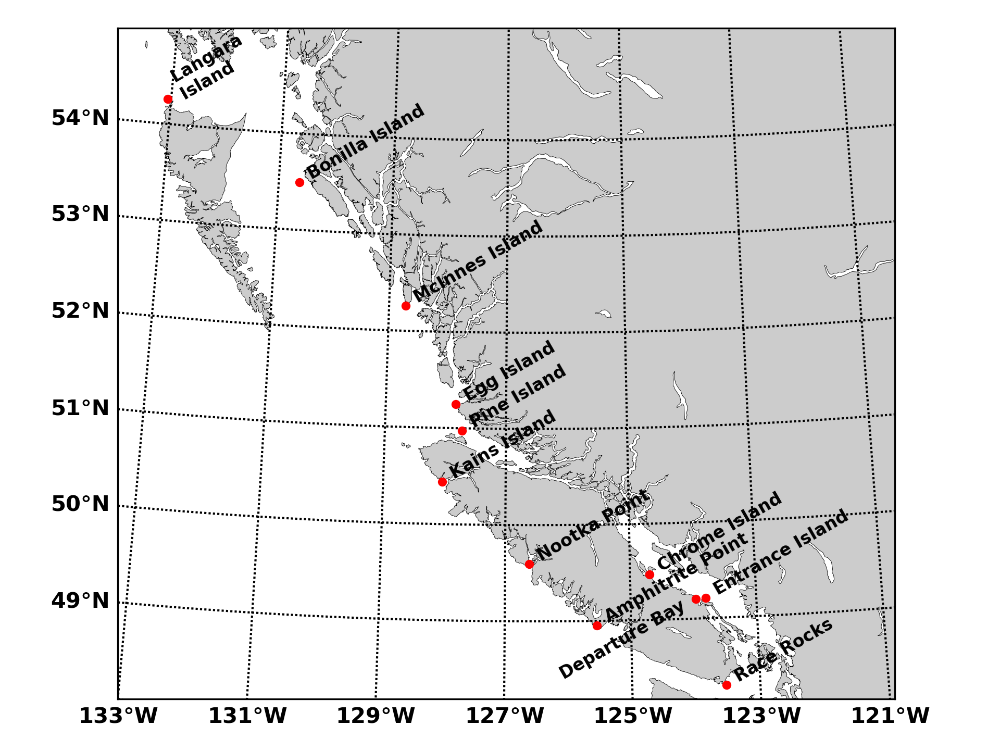
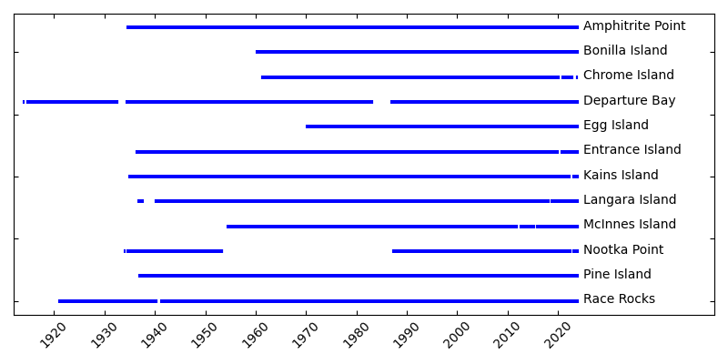
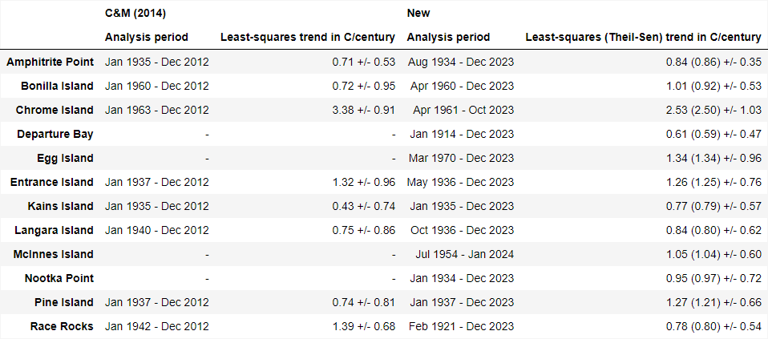

Daily sea surface temperature and salinity observations have been carried out
at several locations on the coast of British Columbia since the early part of
the 20th century. Observations started at the Pacific Biological Station
(Departure Bay) in 1914; 11 stations were added in the mid-1930s and several
more in the 1960s. The number of stations reporting at any given time has
varied as sampling has been discontinued at some stations and started or
resumed at others.
Presently termed the British Columbia Shore Station Oceanographic Program
(BCSOP), there are 12 active participating stations. Most of the stations
are at lighthouses staffed by Fisheries and Oceans Canada, but three (Race
Rocks, Amphitrite Point, and Active Pass) are sampled by contracted observers.
Observations are made daily using seawater collected in a bucket lowered into
the surface water at or near the daytime high tide. This sampling method was
designed long ago by Dr. John P. Tully and has not been changed in the
interests of a homogeneous data set. This means, for example, that if an
observer starts sampling one day at 6 a.m., and continues to sample at the
daytime high tide on the second day the sample will be taken at about 06:50
the next day, 07:40 the day after etc. When the daytime high-tide gets close
to 6 p.m. the observer will then begin again to sample early in the morning,
and the cycle continues. Since there is a day/night variation in the sea
surface temperatures the daily time series will show a signal that varies
with the 14-day tidal cycle. This artifact does not affect the monthly sea
surface temperature data.
The monthly averaged and daily SST data from eight out of 12 currently active stations
are presented on this page. The selected stations were chosen because of the
longevity of their records and for their coverage along BC's coast.
The BC lightstation SST data used here, as well as sea-surface salinity data,
can be found on
Open Data
(note: Open Data will soon be migrating to Enterprise Data Hub).
More information on the program and analyses of its data can be found in Cummins & Masson (2014) and
in Freeland (1990).

Map showing the locations of the eight British Columbia lightstations featured on this page.

Plot showing data availability for each lightstation on this page. Any gaps in the blue
bar for each station indicate no data available for that time.
The plots below contain daily SST data from 2023. The black line shows the average of
all observations for
each day of the year over the entire record, subjected to a 21-day moving average
to smooth the curve.
The blue areas represent observations that are below average, while the red areas
represent observations that are above average.
Data from Chrome Island for 2023 are not available yet.
30-year climatologies of sea-surface temperature for 1991-2020, calculated from monthly mean observations.
Anomaly Time Series
The SST anomalies here were computed from monthly mean observations by subtracting
the climatological monthly mean based on the 30 year period 1991-2020 from the raw
data. The trends of the anomalies were computed from the entire series, without
filling in any data gaps in the series with interpolation or otherwise. Both
least-squares and Theil-Sen trends are shown in this section. Gaps in the data
were filled using spline interpolation before calculating the 95% confidence
intervals on the trends using the non-parametric Monte Carlo approach described by
Cummins & Masson (2014)
In the following plots, the black line shows the least-squares trend for the record, which was
calculated from the entire series without filling in any data gaps. The blue lines
represent the lower and upper 95% confidence intervals on the trend, which were
computed using the nonparametric Monte Carlo approach described by Cummins &
Masson (2014). Gaps were filled using spline interpolation prior to computing
the confidence intervals.
The following table lists lighthouse stations and their analysis periods and linear anomaly trends.
Both least-squares and Theil-Sen trends are given and were calculated from the
entire anomaly series without filling in any data gaps.
New results are listed after the results of Cummins & Masson
(2014) for comparison. The 95% confidence intervals accompanying each trend
were computed using the Monte Carlo approach described by Cummins & Masson (2014).

As shown in the table above, both the least-squares and Theil-Sen trends for the new analysis
period are statistically significant for all eight stations. For the Cummins & Masson (2014) analysis
period, only the trends for half the stations (Amphitrite Point, Chrome Island, Entrance
Island, and Race Rocks) are statistically significant.
Notes
The monthly SST anomalies in Cummins & Masson (2014) were computed by
subtracting the climatological monthly mean based on the 30 year period
1981-2010. The monthly SST anomalies computed here are relative to the
1991-2020 climatological monthly mean.
Any one-month gaps were filled with spline interpolation to get continuous
records for computing the 95% confidence intervals.
For the Langara Island record, the analysis period for the 95% confidence
interval starts in Mar. 1940 to avoid the 30-month data gap (Sept. 1937 -
Feb. 1940) near the beginning of the record. The least-squares trend for
the abridged record is 0.88 °C/century compared with 0.83 °C/century
for the entire record.
For the Entrance Island record, the analysis period
for the 95% confidence interval is limited to May 1936 - Dec. 2019 to avoid
interpolating over the extended data gaps occurring near the end of the
record. The least-squares trend for the abridged record is 1.34
°C/century compared with 1.28 °C/century for the entire record.
The plots and tables below contain statistics on lightstation SST and were produced from daily
SST data. Anomalies were computed by subtracting the average over all time for each day from
the raw data.
References
Cummins, P. F. & Masson, D. (2014). Climatic variability and trends in the surface
waters of coastal British Columbia. Progress in Oceanography, 120(2014),
pp. 279–290. http://dx.doi.org/10.1016/j.pocean.2013.10.002
Freeland, H. J. (1990). Sea surface temperatures along the coast of British
Columbia: regional evidence for a warming trend. Can. J. Fish. Aquat. Sci.
47: 346-350.
Contact
Data Products Team, Ocean Sciences Division
DFO.PAC.SCI.IOSData-DonneesISO.SCI.PAC.MPO@dfo-mpo.gc.ca


{kind=link}
{kind=link}
{kind=link}
{kind=link}
{kind=link}
{kind=link}
{kind=link}
{kind=link}
{kind=link}
{kind=link}
{kind=link}
{kind=link}
{kind=link}
{kind=link}
{kind=link}